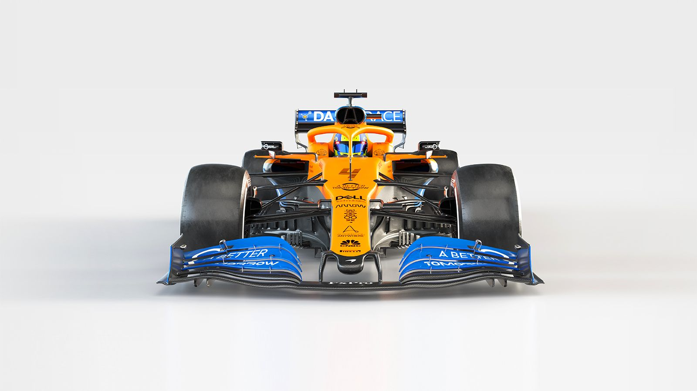
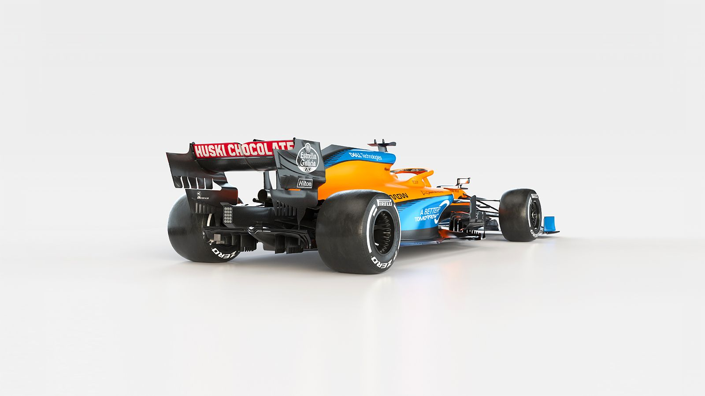

❮
❯
With Mclaren's recent history in F1 people aren't so confident in the car manufacturer's racing ability. They have reworked their car in order to inspire confidence in their fans once again. And with these major reworks and rule changes in the F1 scene they are rarring to get going again.
The project's direction will be guided by Technical Director James Key and team principal Andreas Seidl. This is the first project lead by the two James studied at the University of Nottingham, sponsered by Lotus Engineering to get his degree. Andreas graduated from the Techinichal University in Munich with a diplome in Mechanical Engineering, and has past expierence with with big name teams such as Porshe and BMW.
Not to much is known about the specs of the new F1 car but we do know that this model is returning to using Mercedes engines. And their past 2020 races in the Australian and Italian Grand Prix showed their psotition against big names such as Mercedes, Ferrari, and Red Bull. Listed beside are some notable racing wins.
| Season | Date | Track | Laps Ahead |
|---|---|---|---|
| 1975 | 16 March | Phoenix International Raceway | 97 |
| 1975 | 27 April | Trenton International Speedway | 69 |
| 1976 | 2 May | Trenton International Speedway | 60 |
| 1977 | 12 June | Milwaukee Mile | 103 |
| 1978 | 28 October | Phoenix International Raceway | 67 |
| 1979 | 22 April | Atlanta Motor Speedway | R1=30 R2=61 |